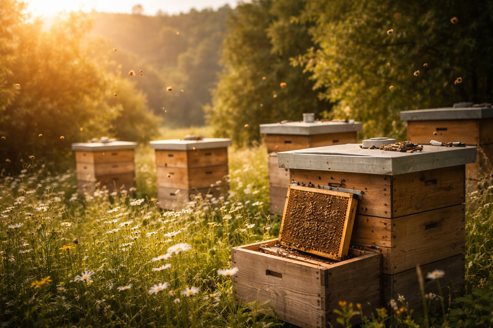

Honning, naturmangfold og en konkret bærekraftshistorie gjestene faktisk legger merke til.
Fredriksten Hotell ligger på historiske Fredriksten festning, med utsikt over Halden og fjorden. Vi ønsket et tiltak som både gir reell verdi for naturen og som kan brukes i gjesteopplevelsen.
Derfor har vi etablert vår egen bigård. Den gir oss egen honning, nytt innhold til kommunikasjon og et konkret tiltak som passer inn i miljøarbeidet vårt.

Honningen kommer fra nærområdet rundt festningen og blir et produkt vi kan servere, gi bort og fortelle om.
Bigården gir oss noe konkret å vise fram, i stedet for generelle bærekraftløfter.
Poenget er at honningen ikke bare blir “en ting vi har”, men en del av konseptet vårt.
Vi jobber systematisk med miljøtiltak og er Miljøfyrtårn-sertifisert. Vi leverer årlig klima- og miljørapport, og bruker resultatene til å styre tiltak videre.
Bigården passer rett inn her: den er synlig, konkret og lett å dokumentere. Vi får leveransegrunnlag, bilder og innhold som kan brukes i kommunikasjon og rapportering uten å overdrive.
MinBigård etablerer og drifter bigård for hotell og bedrifter. Dere får honning, innhold og dokumentasjon klart til bruk.
Ta kontakt